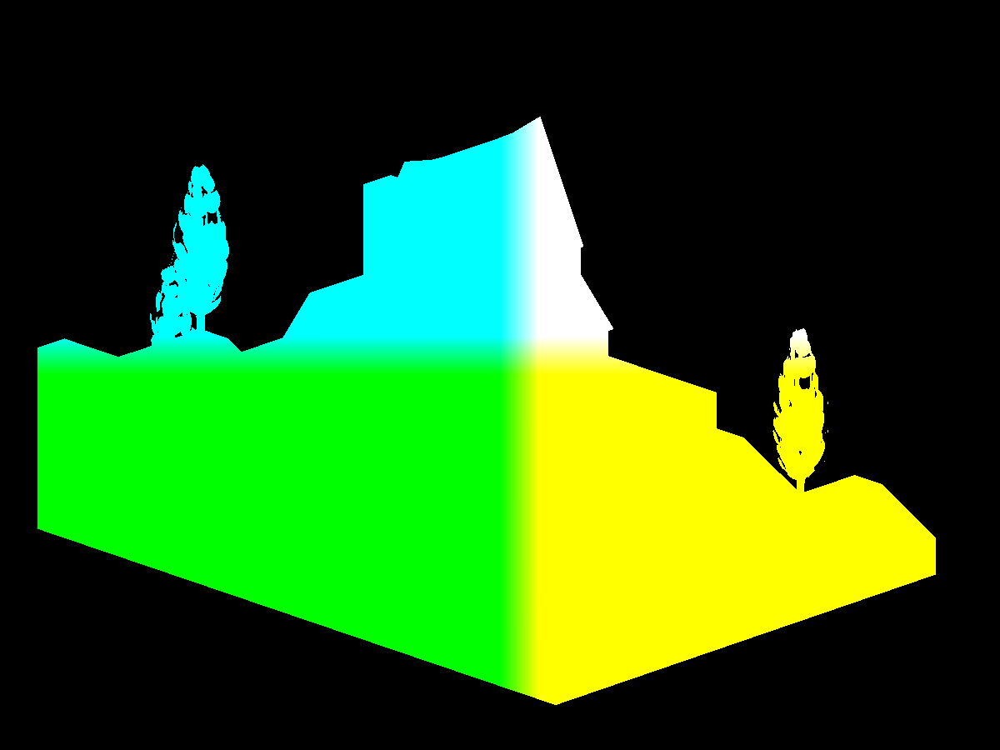
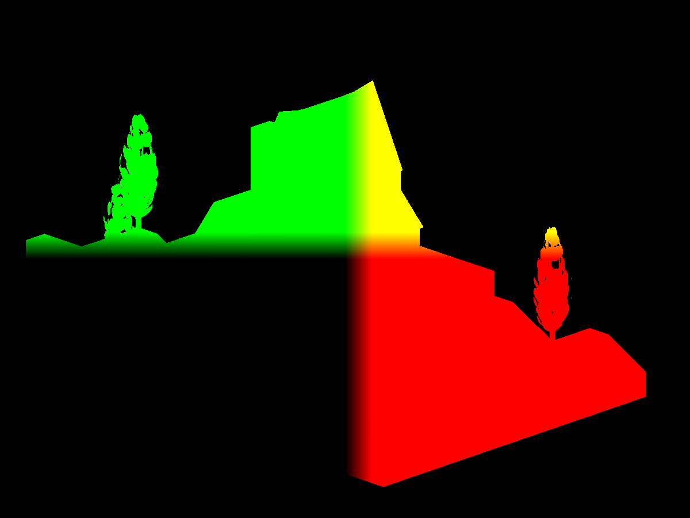
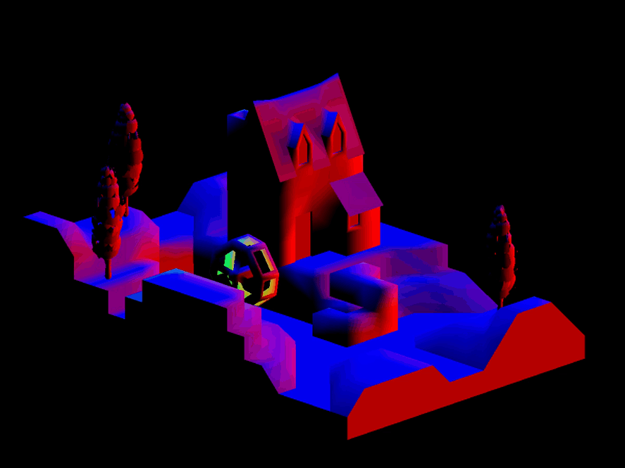
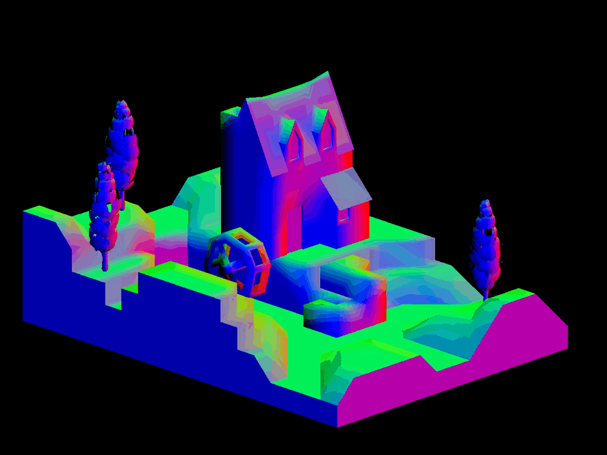
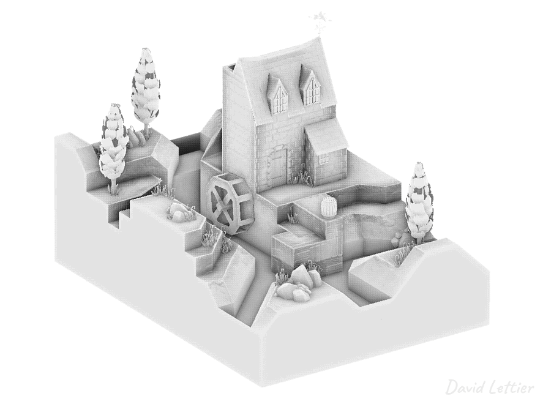
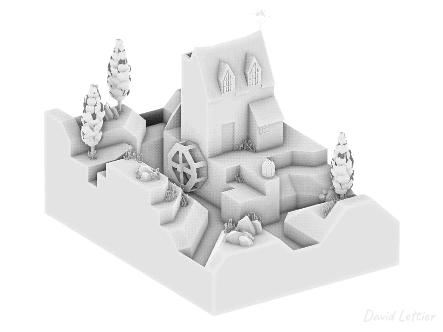
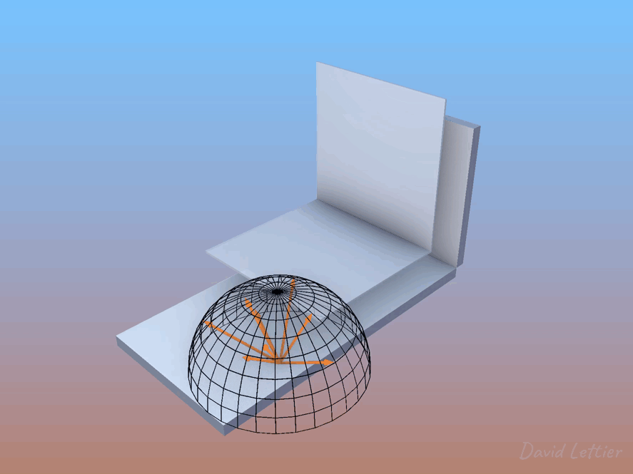
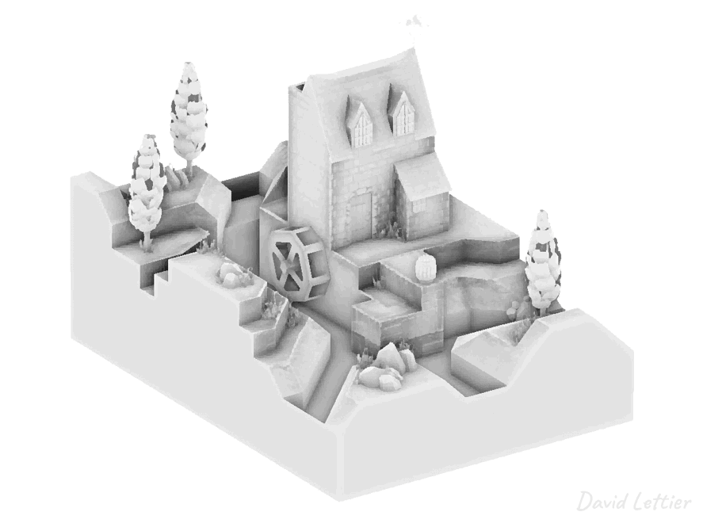

SSAO 是一种你之前可能没意识到自己需要，但一旦有了就离不开的效果。 它可以将一个普通场景提升到惊艳的层次！ 对于相对静态的场景，你可以将环境光遮蔽烘焙到贴图中，但对于动态场景，则需要使用着色器。 SSAO 是较复杂的着色技术之一，但一旦掌握，你会觉得自己就是着色器大师。
SSAO 通过使用少量纹理，来近似计算场景的 环境光遮蔽（Ambient Occlusion）， 这种方法比遍历场景所有几何体计算环境光遮蔽要快得多。 这几张纹理都基于屏幕空间（screen space），因此称为“屏幕空间环境光遮蔽”。
SSAO 着色器需要以下输入：

将顶点位置存入帧缓冲纹理并非必须， 你可以从摄像机的深度缓冲区重建它们（详见教程）。 不过本教程为了简明，避免使用该优化，保持直接。 你也可以根据需求自由选择是否使用深度缓冲。
PT(Texture) depthTexture =
new Texture("depthTexture");
depthTexture->set_format
( Texture::Format::F_depth_component32
);
// 省略部分代码...
depthBuffer->set_clear_color
( LVecBase4f(0, 0, 0, 0)
);
// 省略部分代码...以上是使用 Panda3D 创建深度缓冲的示例代码。
in vec4 vertexPosition;
out vec4 fragColor;
void main() {
fragColor = vertexPosition;
}这是一个简单的顶点位置输出着色器，将视图空间顶点位置输出到帧缓冲。
关键是确保帧缓冲纹理的精度足够高且不限制值范围（不限制在 [0,1] 之间）。
例如位置 <-139.44, 0.00034, 2.5> 不应被错误存成
<0.0, 0.0, 1.0>。
// ...
FrameBufferProperties fbp = FrameBufferProperties::get_default();
// ...
fbp.set_rgba_bits(32, 32, 32, 32);
fbp.set_rgb_color(true);
fbp.set_float_color(true);
// ...示例中设置了每个颜色通道32位浮点，且禁用了数值范围限制。
glTexImage2D
( GL_TEXTURE_2D
, 0
, GL_RGB32F
, 1200
, 900
, 0
, GL_RGB
, GL_FLOAT
, nullptr
);等效的 OpenGL 调用，GL_RGB32F
表示32位浮点颜色格式且不限制范围。
如果颜色缓冲是固定点格式，源和目标的值及混合因子会被限制在 [0,1] 或 [-1,1] 区间； 而浮点格式的颜色缓冲则不会被限制。

图中展示了视图空间中，Y轴为上方向的顶点位置。 请注意，Panda3D 默认Z轴为上，但OpenGL习惯用Y轴为上。

法线用于确定采样方向。示例代码在半球内分布多个采样向量，也可以在球体内分布而不用法线。
in vec3 vertexNormal;
out vec4 fragColor;
void main() {
vec3 normal = normalize(vertexNormal);
fragColor = vec4(normal, 1);
}这是输出视图空间法线的简单着色器。别忘了归一化法线。

法线图同样是Y轴向上。

也可以用法线贴图替代顶点法线以获得更精细的细节， 这需要将法线贴图从切线空间转换到视图空间，方法类似于光照计算时的处理。
// ...
normal =
normalize
( normalTex.rgb
* 2.0
- 1.0
);
normal =
normalize
( mat3
( tangent
, binormal
, vertexNormal
)
* normal
);
// ...计算某个片元的环境光遮蔽程度，需要采样它周围区域。 采样点越多，结果越准确，但性能开销越大。
// ...
for (int i = 0; i < numberOfSamples; ++i) {
LVecBase3f sample =
LVecBase3f
( randomFloats(generator) * 2.0 - 1.0
, randomFloats(generator) * 2.0 - 1.0
, randomFloats(generator)
).normalized();
float rand = randomFloats(generator);
sample[0] *= rand;
sample[1] *= rand;
sample[2] *= rand;
float scale = (float) i / (float) numberOfSamples;
scale = lerp(0.1, 1.0, scale * scale);
sample[0] *= scale;
sample[1] *= scale;
sample[2] *= scale;
ssaoSamples.push_back(sample);
}
// ...示例代码生成随机分布于半球内的采样向量，将其传入着色器。
LVecBase3f sample =
LVecBase3f
( randomFloats(generator) * 2.0 - 1.0
, randomFloats(generator) * 2.0 - 1.0
, randomFloats(generator) * 2.0 - 1.0
).normalized();如果想改成球形分布，只需将Z分量的随机值范围改成
[-1, 1]。
// ...
for (int i = 0; i < numberOfNoise; ++i) {
LVecBase3f noise =
LVecBase3f
( randomFloats(generator) * 2.0 - 1.0
, randomFloats(generator) * 2.0 - 1.0
, 0.0
);
ssaoNoise.push_back(noise);
}
// ...为了更好地随机旋转采样半球，生成一组二维噪声向量。

SSAO 通过采样片元视图空间周围， 采样点越多被遮挡，片元颜色越暗。 采样向量沿法线方向分布，采样点对应的位置与场景深度比较，判断是否被遮挡。

采样示意图。
// ...
float radius = 1;
float bias = 0.01;
float magnitude = 1.5;
float contrast = 1.5;
// ...控制参数：
bias：偏移量，防止自遮挡（“痘痘”效应）radius：采样半径大小magnitude：遮蔽强度contrast：遮蔽对比度 // ...
vec4 position = texture(positionTexture, texCoord);
vec3 normal = normalize(texture(normalTexture, texCoord).xyz);
int noiseX = int(gl_FragCoord.x - 0.5) % 4;
int noiseY = int(gl_FragCoord.y - 0.5) % 4;
vec3 random = noise[noiseX + (noiseY * 4)];
// ...读取采样点位置、法线和随机噪声。
// ...
vec3 tangent = normalize(random - normal * dot(random, normal));
vec3 binormal = cross(normal, tangent);
mat3 tbn = mat3(tangent, binormal, normal);
// ...构造TBN矩阵，将采样向量从切线空间变换到视图空间。
// ...
float occlusion = NUM_SAMPLES;
for (int i = 0; i < NUM_SAMPLES; ++i) {
// ...
}
// ...循环遍历采样点，计算遮蔽数量。
// ...
vec3 samplePosition = tbn * samples[i];
samplePosition = position.xyz + samplePosition * radius;
// ...计算采样点的视图空间位置。
// ...
vec4 offsetUV = vec4(samplePosition, 1.0);
offsetUV = lensProjection * offsetUV;
offsetUV.xyz /= offsetUV.w;
offsetUV.xy = offsetUV.xy * 0.5 + 0.5;
// ...将采样点从视图空间变换到裁剪空间，再映射到UV坐标。
-1 * 0.5 + 0.5 = 0
1 * 0.5 + 0.5 = 1裁剪空间范围[-1,1]映射到UV空间[0,1]。
// ...
vec4 offsetPosition = texture(positionTexture, offsetUV.xy);
float occluded = 0;
if (samplePosition.y + bias <= offsetPosition.y) { occluded = 0; } else { occluded = 1; }
// ...根据采样点深度判断是否被遮挡。
// ...
float intensity =
smoothstep
( 0.0
, 1.0
, radius
/ abs(position.y - offsetPosition.y)
);
occluded *= intensity;
occlusion -= occluded;
// ...根据距离调节遮蔽强度，累计遮蔽值。
// ...
occlusion /= NUM_SAMPLES;
// ...
fragColor = vec4(vec3(occlusion), position.a);
// ...归一化遮蔽值到[0,1]，赋值为片元颜色。
// ...
fragColor = vec4(vec3(occlusion), position.a);
// ...示例中使用位置纹理的alpha通道，避免遮挡背景。

SSAO结果噪声较多，通常需要模糊处理降低噪点。 参考模糊章节，推荐使用中值滤波或桑原滤波保持边缘清晰。
// ...
vec2 ssaoBlurTexSize = textureSize(ssaoBlurTexture, 0).xy;
vec2 ssaoBlurTexCoord = gl_FragCoord.xy / ssaoBlurTexSize;
float ssao = texture(ssaoBlurTexture, ssaoBlurTexCoord).r;
vec4 ambient = p3d_Material.ambient * p3d_LightModel.ambient * diffuseTex * ssao;
// ...最终在光照计算中使用SSAO遮蔽因子调节环境光，提升视觉效果。
(C) 2019 David Lettier
lettier.com